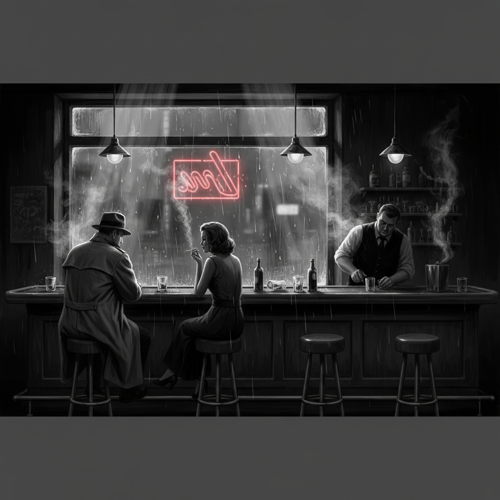
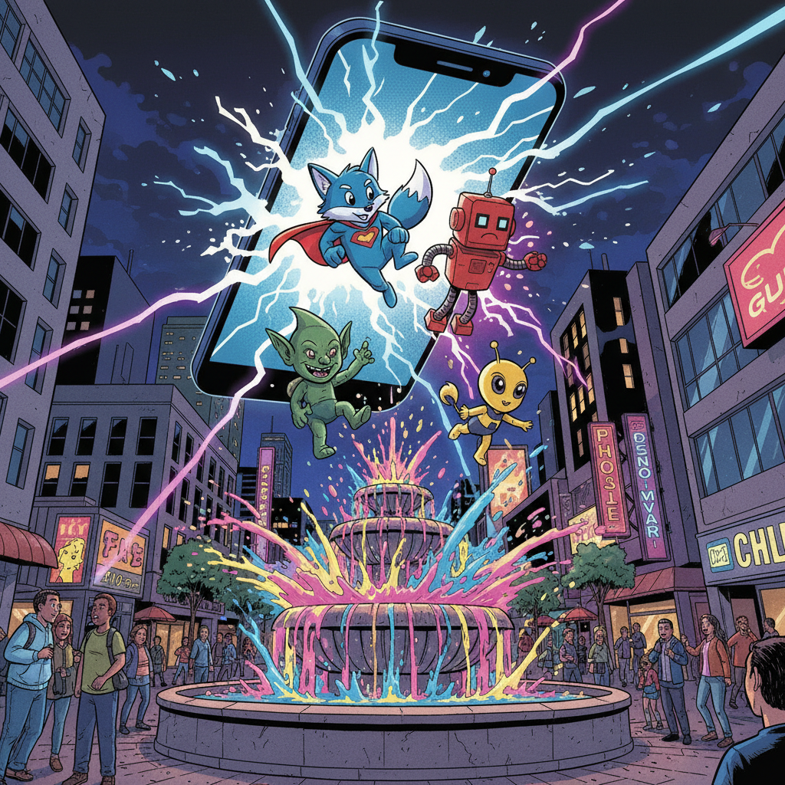

crawl
crawlThe Sunken Vault
a dive into the drowned reliquary

lastcallLast Call at the Undertow
a closing-time conversation in four voices

pfpdPFP'd: Stuck in Meatspace
a reverse-isekai about getting un-canceled, un-arrested, and back online
 golden-threadexternal ↗
golden-threadexternal ↗The Golden Thread
a transmigration wuxia — five acts, nine endings